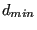

Next: START OF THE REFINEMENT Up: Mesh refining procedure Previous: first loop: getlocalresults.f  Contents
For the second and further loops the field d(*) containing the length of the edges and  are recalculated. The h-field is obtained by interpolation within the unrefined mesh.